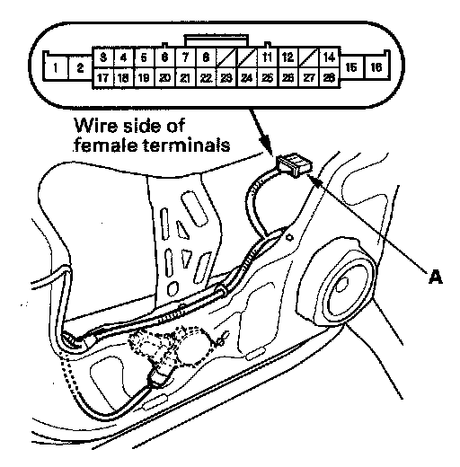
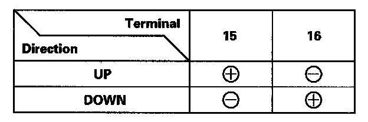
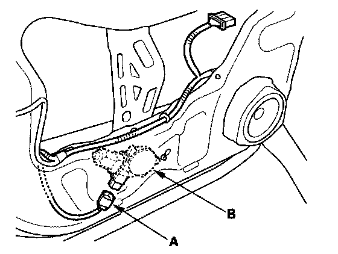
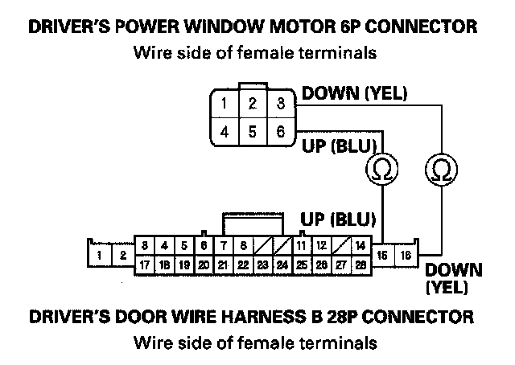

Driver's Power Window Motor Test
Driver's Power Window Motor Test
1. Remove the door panel, and disconnect the driver's door wire harness B 28P connector (A) from the driver's door wire harness A.

2. At the driver's door wire harness B 28P connector, test the power window motor in each direction by connecting battery power and ground according to the table.When the motor stops running, disconnect one lead immediately.
3. If the motor does not run or fails to run smoothly, Go to step 4.

4. Disconnect the 6P connector (A) from the driver's power window motor (B).

5. Check for continuity between the driver's power window motor 6P connector No. 3 and No. 6 terminals and the driver's door wire harness B 28P connector No. 15 and No. 16 terminals respectively. There should be continuity.
- If there is no continuity, repair open in the wire.
- If there is continuity, replace the power window motor.
6. After replacing the power window motor, reset the power window control unit.